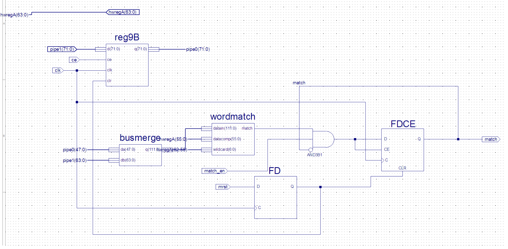
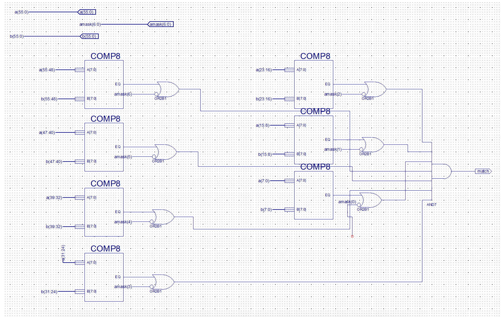
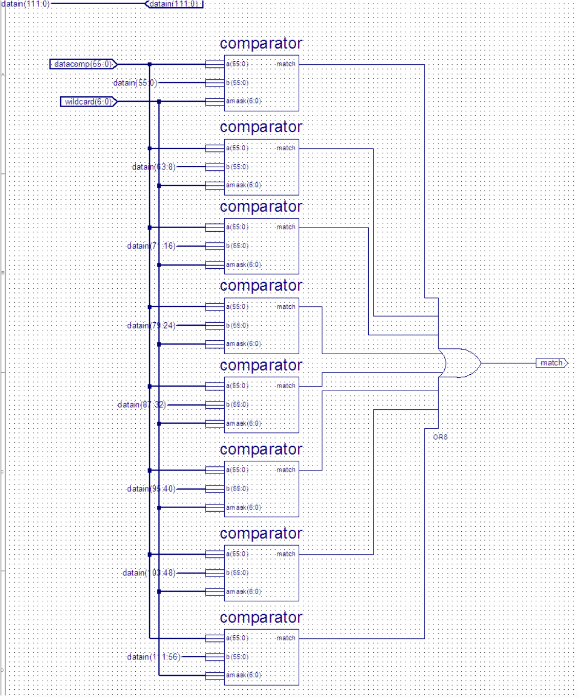
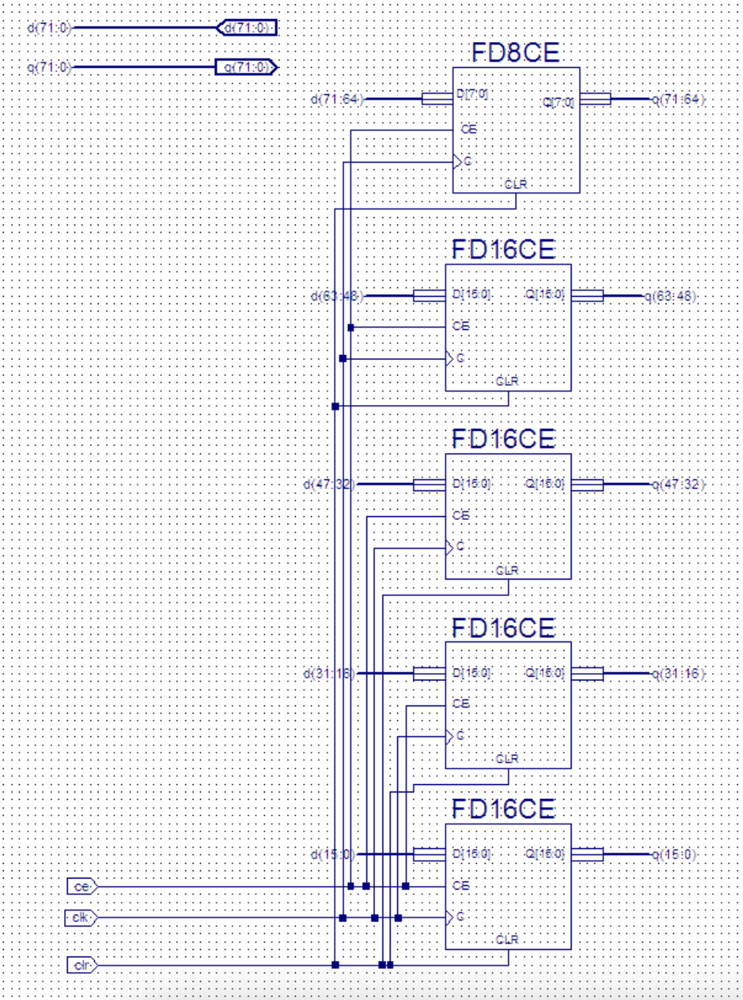
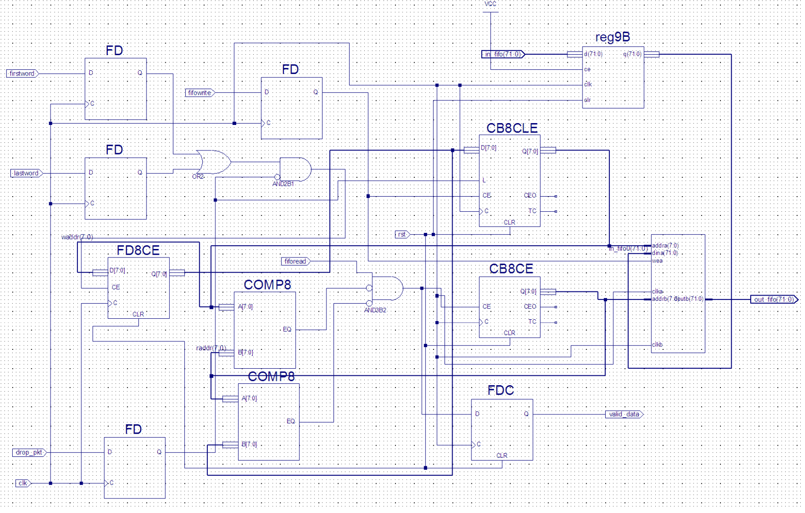

NetFPGA / Packet Processing · EE 533
Inline packet-stream pattern matching engine on NetFPGA-v2 (Virtex-2 Pro) with sliding-window comparator and FIFO-backed drop logic
Overview
The Mini Intrusion Detection System is a hardware pattern-matching engine implemented via schematic capture in Xilinx ECS, targeting the NetFPGA-v2 platform (Virtex-2 Pro). It performs inline inspection of a live packet data stream, comparing each byte window against a stored signature pattern without interrupting throughput.
The design uses a sliding-window architecture: a 9-byte pipeline register (reg9B) retains the tail of the previous cycle's data, which is merged with the current 8-byte pipe1 stream to form a 14-byte (112-bit) window. Seven 56-bit comparator instances scan every possible alignment of the 7-byte pattern within that window, asserting a match signal if any position matches — subject to a 7-bit wildcard mask (AMASK). A matched packet is held in a 19-byte-wide dual-port block-RAM FIFO (dropfifo) until it can be flagged or dropped.
All Verilog netlists were auto-generated from ECS schematics, synthesized, and validated in simulation with Perl-generated traffic covering boundary cases.
Signal Path
Design Entry Note — All modules were designed as ECS schematics in Xilinx ISE. The Verilog netlists (e.g. detect78.v, wordmatch.v) were auto-generated by ECS and are not intended for manual editing per the tool's synthesis directives.




